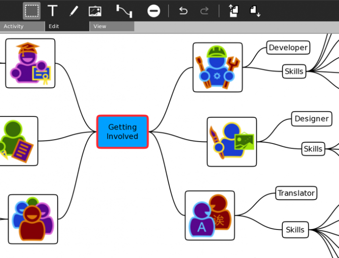
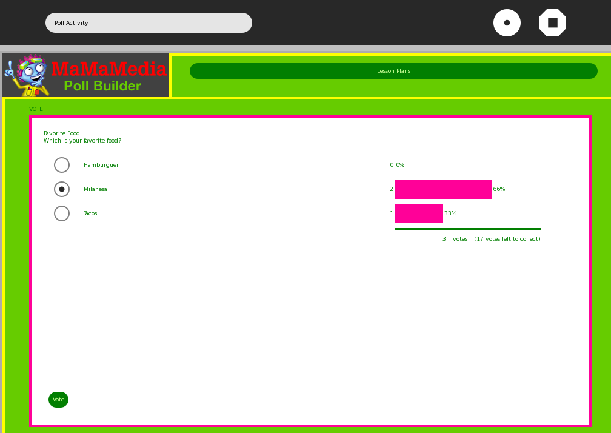
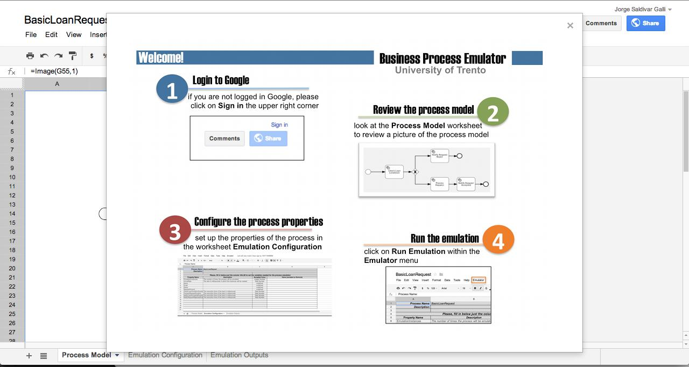
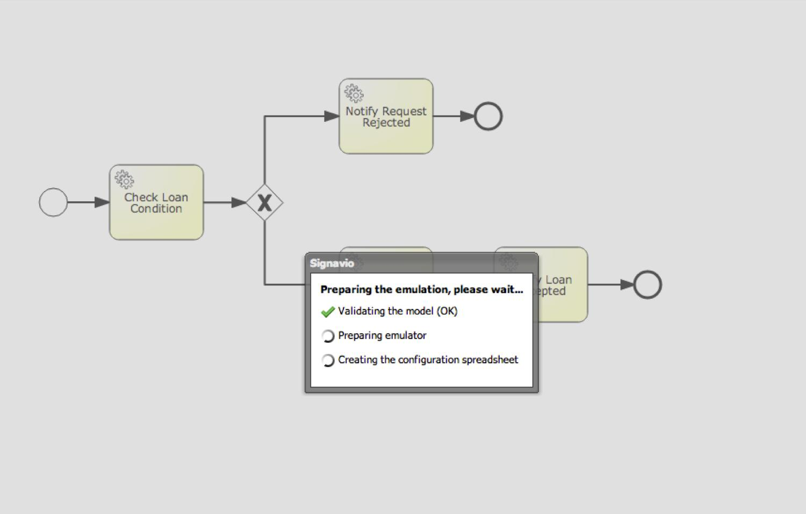
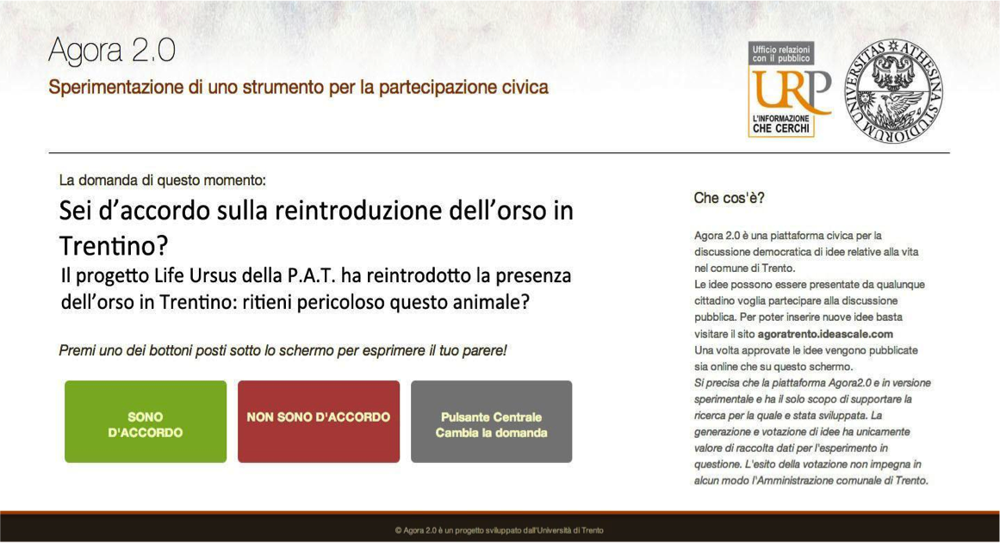
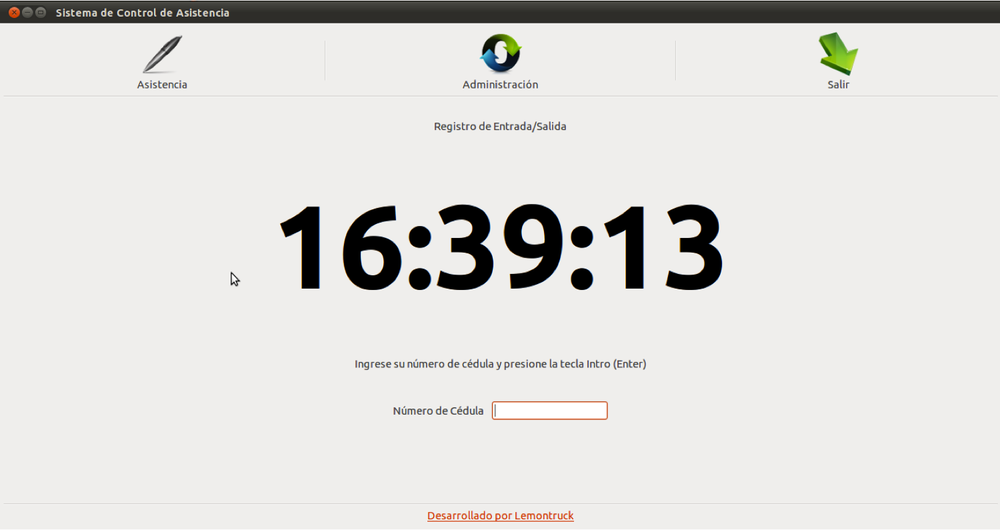
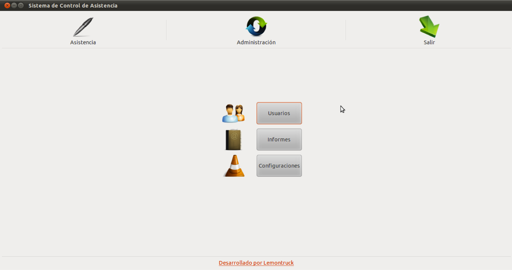
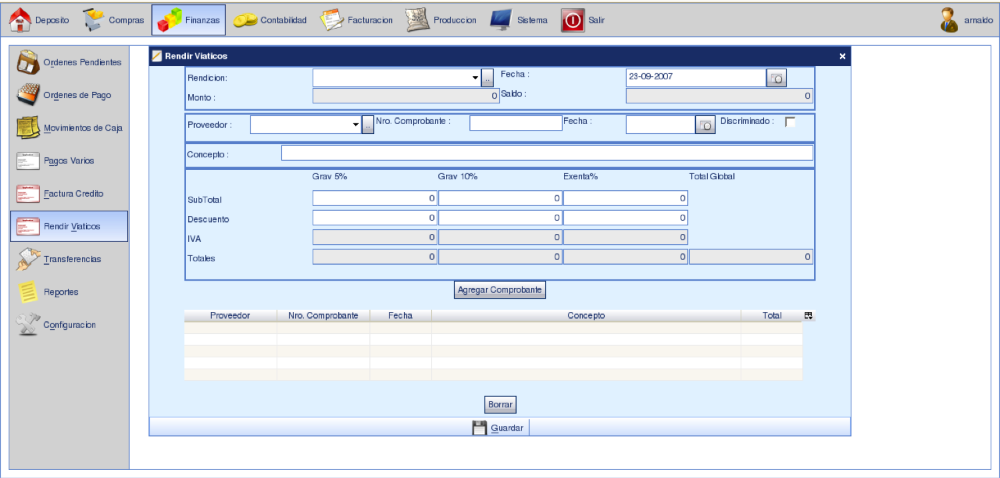

Welcome!
A little bit about me. In 2006, I finished my bachelor in Computer Science. From that time, I spent most of my time working for projects related with the developing of technology for social impact. In particular, a significant part of my first years as Software Engineer I was involved in the deployment of the project One Laptop per Child (OLPC) in urban and rural cities of my country, Paraguay.
All of my contributions to OLPC are summarized here as well as the description of some other personal projects and research work I made during my last time as PhD student.
Education
OLPC Sugar educational game that aims at helping visual impaired children to learn spatio-temporals concepts as well as improve their social abilities.
Features. a) the game uses the metaphor of a club of Othello (or Reversi) players for guiding the child's learning process; b) at the begginig, the child has to take a tutorial where she/he is introduced in the rules of Othello; c) the child progresses in the game beating other club members; d) each beaten opponent rewards the child with a badge.
Take a look at the video for a short demo (in spanish).
OLPC Sugar application for creating mind-maps. It supports the construction of maps composed of texts, images and drawings.
Obs. Part of the developer team
OLPC Sugar application for creating polls in order to collect opinions regarding community issues.
Features. a) children can create their own polls and answer options; b) answer choices can be texts, images or both; c) polls can be answered through the mesh network.
Obs. Part of the developer team
Research
Flexible and powerful spreadsheet-based business process emulator able to perform functional testing of service-oriented business processes. The software includes a plugin for Signavio process modeler editor, a Google Sheet template and a web-service process emulator engine.
Features. a) emulation of service-oriented business process; b) spreadsheet-based business process testing.
 Web-based system constructed to foster civic-participation regarding local issues.
Features. a) Design to run in public displays; b) Posses an integration with Idea Scale--high-popular idea management system; c) Offer an administration front-end where public administration staffs can post questions in terms of yes/no polls; d) Allow citizens to participate by agreeing and disagreeing on the posted questions; e) Support English and Italian language.
Obs. Main developer
Personal
Open-source linux application program that aims at controling people's attendance to conferences, courses, events, work using their fingerprint.
Features. a) fingerprint assistance control; b) aggregation of registries by events; c) assistance reports.
 Open-source android application that leverages weather local services to provide highly accurate weather temperature information. This information is displayed in a simple and nice home-screen widget.
Features. a) configuration of the city and temperature unit measurement; b) weather statistics information grouped by preset filters: day, week, month, semester and year; c) languages supported: English, Italian and Spanish.


Obs. Part of the developer team
